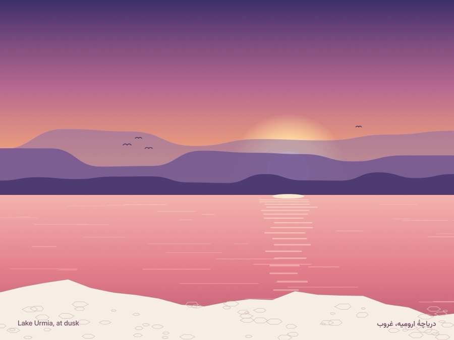
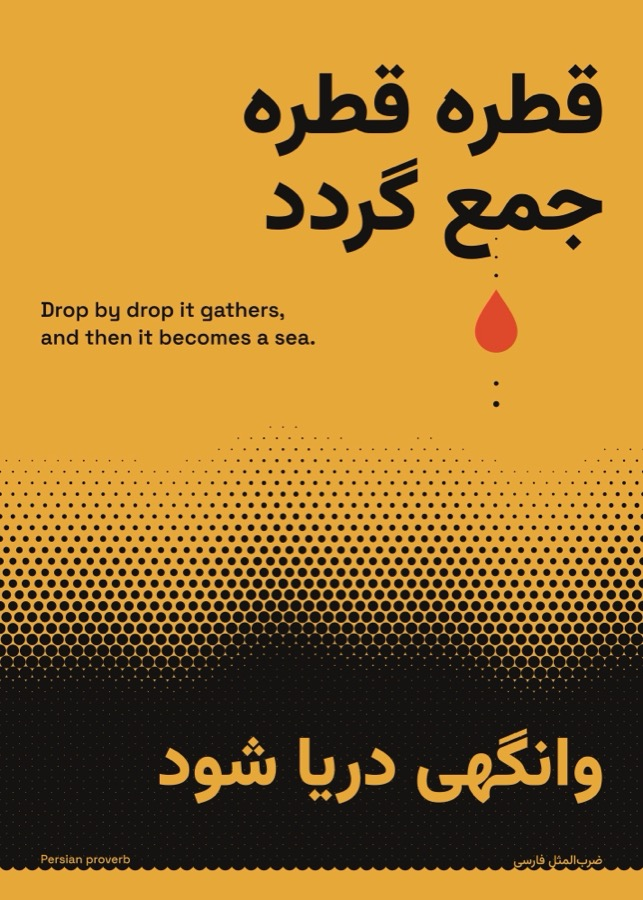
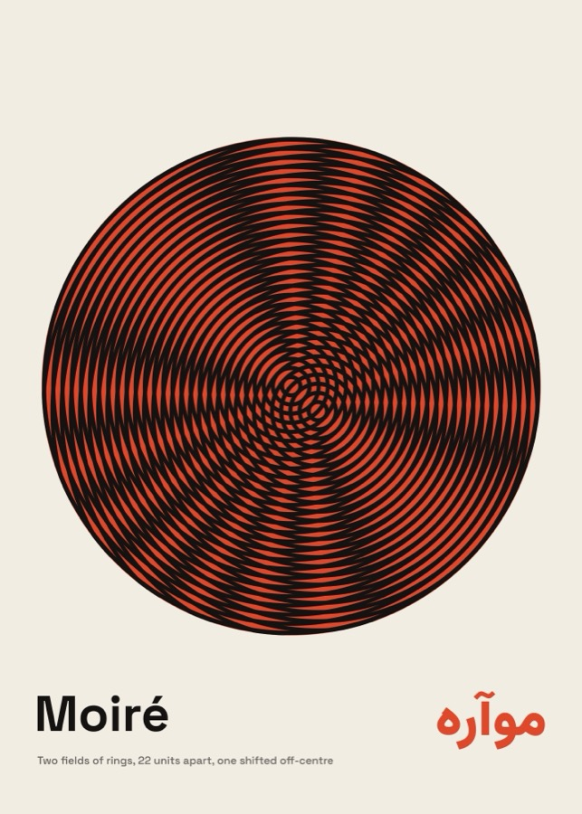
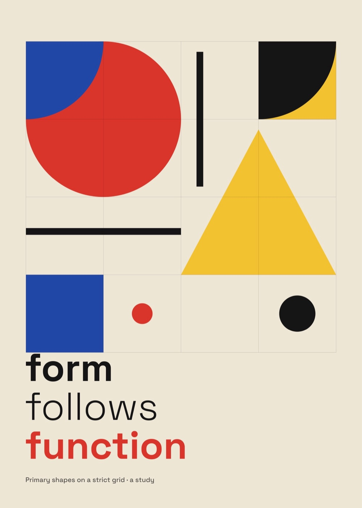
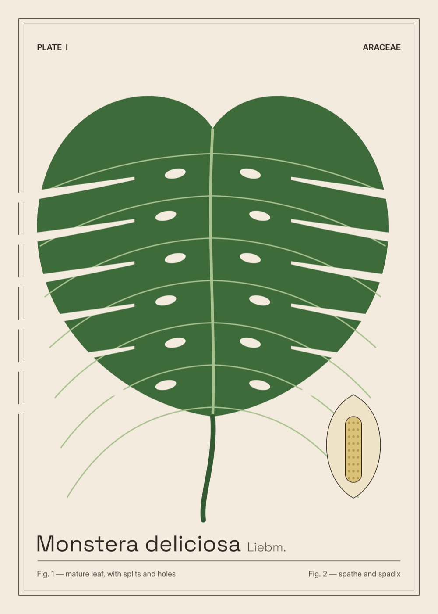

Self-initiated · 2026
Sixteen studies
Sixteen short pieces, each in a different mood, from Persian traditions to international themes: posters, patterns, icons, illustration, information design and packaging. All were made for this portfolio. Select any of them to see its own page.
 01NocturnalYalda, the Longest Night — Poster
01NocturnalYalda, the Longest Night — Poster 02OrnamentalKashi — Star-and-Cross Tile Pattern
02OrnamentalKashi — Star-and-Cross Tile Pattern
04DreamyLake Urmia at Dusk — Vector Landscape
05BoldDrop by Drop — Proverb Poster 06FestiveNowruz — Haft-sin Still Life
06FestiveNowruz — Haft-sin Still Life 07SystematicThe Persian Solar Year — Calendar Wheel
07SystematicThe Persian Solar Year — Calendar Wheel
08HypnoticMoiré — Op-Art Poster 09NostalgicSaffron — Vintage Tin Label
09NostalgicSaffron — Vintage Tin Label 10EarthyWindcatchers of Yazd — Architectural Illustration
10EarthyWindcatchers of Yazd — Architectural Illustration 11AdventurousVisit Saturn — Retro-Futurist Travel Poster
11AdventurousVisit Saturn — Retro-Futurist Travel Poster
12RationalForm Follows Function — Geometric Poster
13ScholarlyMonstera deliciosa — Botanical Plate 14RhythmicImprovise — Jazz Poster
14RhythmicImprovise — Jazz Poster 15WhimsicalTiny City — Isometric Illustration
15WhimsicalTiny City — Isometric Illustration 16PoeticOne Tree, Four Seasons
16PoeticOne Tree, Four Seasons